Build a clean database, then start two servers
Verdicts are permanent. The audit trail refuses UPDATE and DELETE, so a database that has been demonstrated on has already been judged. Rebuild it before every audience; it takes about 21 seconds.
The project has its own Python environment, hitl-ids\.venv: Python 3.11 with the exact library versions the tests, the demo database and the trained model were produced with (listed in requirements.txt). Activate it in every terminal you run Python commands in. After activating, a plain python means the project's Python, whatever other Python (for example 3.12) is installed on the computer. You also need Node.js 18 or newer for the console.
Which folder each command runs from
Everything Python runs from the hitl-ids folder: the one that contains apps/, packages/, data/ and pyproject.toml. Commands like python -m uvicorn apps.api.main:app find the code relative to the folder you are in, so from anywhere else they fail with No module named 'apps'. The console's npm commands run from hitl-ids/apps/web.
| Folder | On the development machine | Run here |
|---|---|---|
| hitl-ids | C:\Users\Glenn Ang\Desktop\SIM Assignments\FYP\CSIT321-Human-in-the-loop_IDS\hitl-ids | pip install · run_detection · rehearse_demo · uvicorn (the API) · pytest |
| hitl-ids/apps/web | …\CSIT321-Human-in-the-loop_IDS\hitl-ids\apps\web | npm install · npm run dev (the console) · npm test · npm run e2e |
# ── terminal 1: the API ───────────────────────────────────────────── > cd "C:\Users\Glenn Ang\Desktop\SIM Assignments\FYP\CSIT321-Human-in-the-loop_IDS\hitl-ids" > dir # you should see apps data packages pyproject.toml # one-time: create the project environment from Python 3.11, then install into it # (already done on the development machine — skip to "every terminal") # use this full path: "py -m venv" and plain "python -m venv" would pick Python 3.12 > C:\ProgramData\miniconda3\python.exe -m venv .venv > .venv\Scripts\activate > python -m pip install -r requirements.txt # every terminal: activate the environment first > .venv\Scripts\activate # Command Prompt; the prompt now starts with (.venv) PS> .venv\Scripts\Activate.ps1 # or this, in PowerShell > python --version # must print Python 3.11.x # before every audience — DELETE FIRST: run_detection appends, it does not replace > del data\demo.db # skip this and you get 10,000 alerts and two runs > python scripts/run_detection.py # fresh data/demo.db: 5,000 flows → 5,000 alerts, ~21 s > python scripts/rehearse_demo.py # 41 checks on a copy; must end "holds end to end" # start the API on :8000 and leave this terminal open > python -m uvicorn apps.api.main:app # ── terminal 2: the console ───────────────────────────────────────── > cd "C:\Users\Glenn Ang\Desktop\SIM Assignments\FYP\CSIT321-Human-in-the-loop_IDS\hitl-ids\apps\web" > npm install # one-time > npm run dev # http://localhost:5173
Uvicorn prints Uvicorn running on http://127.0.0.1:8000 when the API is up; Vite prints Local: http://localhost:5173/. To leave the environment, type deactivate. Any Python 3.11 can create it; on the development machine that is C:\ProgramData\miniconda3\python.exe. The console's terminal does not need the environment: Node runs it.
Open http://localhost:5173. To confirm the API is up and which database it is serving, open http://localhost:8000/api/health. The API's first request also adds the alert-notes table to an older database; alert data is not changed.
Optional last check: npm run e2e in apps/web plays this whole story in a real browser against its own copy of the database, in under a minute. It never touches data/demo.db.
Reading the queue: bands and evidence
Every alert has two labels. Its evidence class records what detected it and never changes. Its queue band decides where it ranks, and analyst feedback moves it. Within a band, alerts rank by operational score.
| Band, in queue order | Meaning | At start |
|---|---|---|
| Tier 2 candidate | Would escalate past Tier 1: critical and high-severity | 644 |
| Corroborated | A signature rule and the model agree | 0* |
| Model only | Only the model flagged it; no rule gives a checkable reason | 352 |
| Nothing flagged it | No detector fired. These alerts still exist, because they are the denominator of every measurement | 4,004 |
* All 200 corroborated alerts start in the Tier 2 band. A "Signature override" band exists too, for alerts only a rule flagged, but this dataset contains none.
The five verdicts
The console uses the closing labels SOC tools use: Microsoft Sentinel and Elastic close incidents as True, Benign or False Positive. Each verdict shows the score change it requests; the guardrails decide what is applied.
Architecture: the stack, the modules, and how they connect
hitl-ids/ · apps/web · apps/api · packages · scripts · dataThe system has two halves that share one database. The offline half is a set of Python scripts: they turn recorded network flows into scored, explained alerts and write them to SQLite, and they run the evaluation. The online half is what the audience sees: a React console in the browser, served by Vite, talking to a FastAPI service that reads and writes that same database through the domain packages. Nothing is a live feed: detection runs before the demo, and the console works on its results.
Tech stack
| Layer | Technology | Version in use | What it does here |
|---|---|---|---|
| Console UI | React · TypeScript | 19.3 · 5.9 | Every screen for the three roles |
| Routing | React Router | 7.18 | URL per screen; filters and the selected alert live in the address bar |
| Styling | Tailwind CSS · IBM Plex Sans · JetBrains Mono | 4.3 | The design tokens in src/index.css |
| Charts | Recharts | 3.10 | Dashboard charts and the Overview's capture-hour histogram |
| API client | openapi-fetch · openapi-typescript | 0.17 · 7.13 | A typed client generated from the API contract, so a wrong field fails the build |
| Dev server / build | Vite | 8.3 | Serves the console on :5173 and forwards /api to the API |
| API | FastAPI on Uvicorn | 0.136 · 0.37 | 25 JSON operations plus /api/health, on :8000; interactive docs at /docs |
| Contracts | Pydantic | 2.11 | Every row and every request/response body is a validated model |
| Database | SQLite (Python sqlite3) | — | data/demo.db; append-only tables enforced by triggers |
| Detection model | XGBoost · native TreeSHAP | 3.2 | 8-class classifier and a per-alert explanation |
| Data | pandas · NumPy · scikit-learn | 2.3 · 2.3 · 1.7 | Loading CSE-CIC-IDS2018 flows, training and metrics |
| Runtimes | Python · Node.js | 3.11 · 22 | Python runs from the project environment hitl-ids\.venv; tested versions are pinned in requirements.txt |
| Tests | pytest · Vitest + Testing Library · Playwright | 8 · 5 · 1.63 | Backend, component and real-browser end-to-end tests |
How the pieces connect
run_detection.py uses the same packages/ code as the API, so detection and the console share one set of contracts.Module map
| Folder | Responsibility | Key files |
|---|---|---|
| apps/web/src/pages | One component per screen, grouped by role: analyst, admin, evaluator, and the login page | analyst/WorkstationPage.tsx · analyst/AlertDetailPage.tsx · admin/GuardrailsPage.tsx · evaluator/RunPage.tsx |
| apps/web/src/features | Reusable pieces of those screens: the workstation's three columns, the evidence panels, the verdict form and score chain, admin and evaluation helpers | workstation/ · alert/ · feedback/FeedbackPanel.tsx · feedback/categories.ts |
| apps/web/src/api | The typed HTTP client, generated from the contract, plus the loading/error/success hook every screen uses | client.ts · schema.d.ts (generated) · useApi.ts |
| apps/web/src/session · components | Real sign-in since S18a (bcrypt + JWT), the session and route guards; the shell (top bar, sidebar) and shared UI primitives | roles.ts · guards.tsx · layout/ · ui.tsx · states.tsx |
| apps/api | HTTP only: parse and validate the request, check the role, call a package, map rows to response shapes, one error envelope | main.py · routes.py · deps.py · mappers.py |
| apps/api/contract | The API contract written first: request/response models and the hand-authored OpenAPI document the client is generated from | alerts.py · operations.py · common.py · openapi.py → openapi.json |
| packages/contracts | The canonical data model shared by everything: Pydantic models for every table, the SQLite schema, migrations and the row codec | models.py · db.py · schema.sql |
| packages/detection/signature | Signature rules: which flow fields a rule may test, the rule engine, the versioned tuned rule set | engine.py · observable.py · rule_set.py |
| packages/detection/ml | XGBoost inference with native TreeSHAP explanations | inference.py |
| packages/detection/fusion · ranking | Complementary Evidence Fusion of rule and model evidence; the severity chart and queue ranking | fusion/cef.py · ranking/severity.py · ranking/formulas.py |
| packages/detection/pipeline | The batch run (source → detectors → fusion → database) and the repository layer the API reads through | runner.py · source.py · predictor.py · store.py |
| packages/detection/feedback · guardrail | A verdict → guardrails bound the change → stored, re-scored, audited; similar-alert (family) learning | feedback/service.py · feedback/learning.py · guardrail/policy.py |
| packages/detection/triage · audit | Alert status, ownership and notes; the typed, append-only audit writer | triage.py · audit/writer.py |
| packages/evaluation | The three-arm evaluation: pre-registered verdict sequence, harness, metrics, and the one join to ground truth | scenario.py · harness.py · metrics.py · truth.py |
| scripts | Command-line entry points: build samples, train, write the rule set, run detection and evaluation, rehearse, generate the contract | run_detection.py · run_evaluation.py · rehearse_demo.py · build_openapi.py · serve_rehearsal.py |
| data · models · evaluation | The demo database and samples; the trained model and its feature list; committed evaluation results | data/demo.db · models/xgboost_ids_model.json · evaluation/three-arm/runs/ |
One verdict, end to end
- Browser. The analyst picks False Positive and clicks Record verdict.
FeedbackPanel.tsxcallsPOST /api/alerts/{alertRef}/feedbackthrough the typed client, which carries the signed-in account'sAuthorization: Bearertoken. - Vite forwards
/api/…from :5173 to the API on :8000 (vite.config.ts). - FastAPI (
routes.py) validates the body as aFeedbackRequest, resolves the role and opens a database connection (deps.py). - Feedback service (
feedback/service.py) asks the guardrail policy how far the score may move, stores the verdict, updates the alert's score and band, runs family learning, and writes audit entries, all in one transaction. - Mappers turn the stored rows into a
FeedbackResponse: the requested change, what bound it, the applied change, and what the family learned. - Browser draws the score-adjustment chain from that response. It never predicts the outcome locally, because only the guardrails know it.
The API surface
| Area | Operations | Used by |
|---|---|---|
| Queue and alert | GET /api/alerts · GET /api/alerts/{ref} · GET …/score-adjustment · GET …/feedback-history | Workstation, Alert Queue, alert page |
| Similar alerts | GET /api/alerts/families | The queue's Group by: Family view; GET /api/alerts?familyKey=… reads a group's members back |
| Verdicts | POST /api/alerts/{ref}/feedback | Verdict form |
| Triage | POST …/status · POST …/assign · GET/POST …/notes | Workstation header and Notes tab |
| Overview and context | GET /api/dashboard/summary · GET /api/dashboard/breakdowns · GET /api/entities/ip/{ip} | KPI strip, Dashboard, Overview, IP address page, context rail, System Status |
| Administration | GET/PUT /api/config/guardrails · GET /api/audit-log · POST /api/detection/run · GET /api/admin/reports/ips · GET /api/admin/reports/ip/{ip} | Guardrails, Audit Trail, System Status, IP security report |
| Evaluation | GET /api/evaluation/scenarios · GET /api/evaluation/runs · GET …/runs/{id} · GET …/runs/{id}/detection | Evaluator screens |
| Health | GET /api/health | Check the API is up and which database it serves |
With the API running, http://localhost:8000/docs lists every operation interactively.
Configuration and data
| Setting or store | Default | Purpose |
|---|---|---|
| HITL_IDS_DB | hitl-ids/data/demo.db | Which SQLite file the API serves |
| HITL_API_TARGET | http://127.0.0.1:8000 | Where Vite forwards /api; the end-to-end tests point it at a disposable API on :8001 |
| VITE_API_BASE_URL | same origin | Call an API on another host instead of going through the proxy |
| Authorization: Bearer | the token issued at sign-in | Real sign-in (S18a): bcrypt-checked accounts, 8-hour JWTs, RBAC on the account's role. Three accounts seed themselves on first sign-in; override the dev default with HITL_IDS_JWT_SECRET |
| Database tables | 14 | users, datasets, signature_rules, ml_models, detection_runs, alerts, flow_data, feedback_events, alert_families, alert_notes, audit_log, guardrail_config, evaluation_scenarios, evaluation_runs. audit_log, feedback_events and alert_notes refuse UPDATE and DELETE. |
How it is tested
| Layer | Tool | Command and folder |
|---|---|---|
| Contracts, detection, guardrails, API | pytest | python -m pytest · hitl-ids |
| Screens and components | Vitest + Testing Library | npm test · hitl-ids/apps/web |
| Client matches the contract | openapi-typescript | npm run check:api · hitl-ids/apps/web |
| The whole demo in a real browser | Playwright | npm run e2e · hitl-ids/apps/web |
| The demo story through the API | rehearse_demo.py | python scripts/rehearse_demo.py · hitl-ids |
Sign in, and the three roles
/login- Open the console. Sign in as
g.ang/analyst-demo. You land on the Workstation.
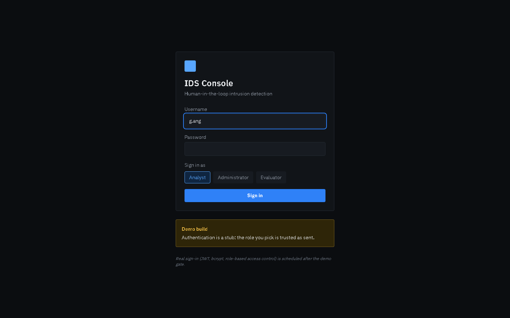
Security Analyst
g.ang · lands on /analyst/workstationWorkstation, Overview, Dashboard, Alert Queue, Investigations, Feedback Impact, and a page per IP address. Records verdicts, claims and closes alerts, keeps notes.
System Administrator
admin · lands on /admin/statusSystem Status, Guardrails, Audit Trail. The only account that can change guardrail settings.
Evaluator
evaluator · lands on /evaluator/scenariosEvaluation runs, the three-arm comparison, detection metrics.
Sign-in is real: passwords are checked against bcrypt hashes, the server issues an 8-hour signed token, and every request carries it. There is no role switcher — to show another view, sign out and sign in as that account (
admin/admin-demo,evaluator/evaluator-demo). A wrong password is refused on the spot.
The workstation: queue, alert and context in one view
/analyst/workstationSOC consoles put the queue beside the alert, rather than a page per alert. The workstation has three columns: the alert queue on the left, the selected alert in the centre, and its context on the right. Above them, the top bar shows a UTC clock and a Recorded flows badge (these are recorded lab flows, not a live feed). The KPI strip counts Critical, Tier 2 candidates, Needs review, Unresolved, Verdicts, False positives, Guardrail actions and Total alerts.
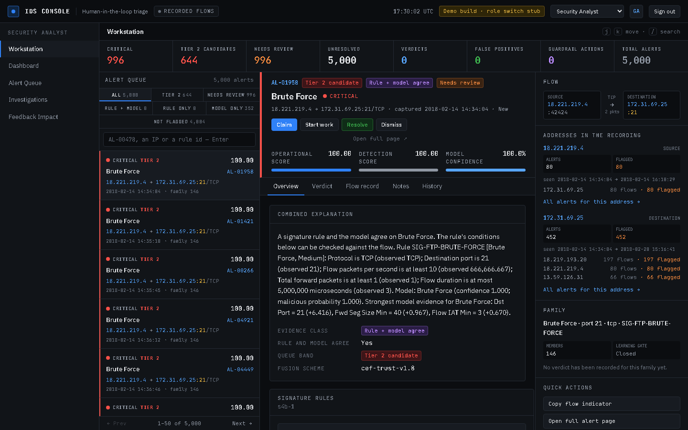
AL-01707, an Infiltration at Critical. Search AL-01958 for the rule-and-model alert this act used to open on.- 1Left navigation. The whole demo walks down this list in order: Workstation, Overview, Dashboard, Alert Queue, Investigations, Feedback Impact. Click it to move between acts.
- 2The KPI strip. Eight counters that change as verdicts are recorded — the fastest way to show that a verdict had an effect. Critical reads 185 here, not 996: the count answers "how many are Critical", and severity is now capped by the attack class, so only Botnet and Infiltration reach it. Verdicts and False positives both read 0.
- 3The band tabs. Click one to filter the queue without leaving the workstation. These are the bands — Tier 2 candidate, Rule + model, Rule only, Model only, Not flagged. They label and filter; they no longer order the queue, which ranks by severity. Tabs only appear when the counts are non-zero.
- 4The queue itself. Cards, not rows. Click any card to open it in the centre. This is the same 5,000-alert queue as the Alert Queue page, ranked identically.
- 5The four actions. Claim takes ownership — the alert then shows under Mine. Start work moves it to In progress. Resolve and Dismiss are shortcuts into the verdict form below.
- 6The detail tabs. Verdict is the one that matters — it holds the form you record against. Overview carries the combined explanation, Flow record the raw flow, Notes the analyst's own text, History every verdict ever recorded.
- 7The context rail. Addresses in the recording, then the family panel. Here it reads
Infiltration · port 443 · tcpwith 8 members and the learning gate Closed, because nobody has judged this family yet. This is the panel to point at during the family act — after the third agreeing verdict it shows the gate opening and the members moving.
- Band tabs filter the queue: All · Tier 2 · Needs review · Rule + model · Rule only · Model only · Not flagged, each with its count.
- Search a record, IP or rule id (press / to jump there). Search
AL-00478and click its card. - Move through the list with j and k; the centre and the rail follow the selection. The selection, tab and search live in the address bar.
- The alert header shows its band, evidence and severity, the flow and capture time, and three meters: operational score (feedback moves it), detection score (fixed) and model confidence.
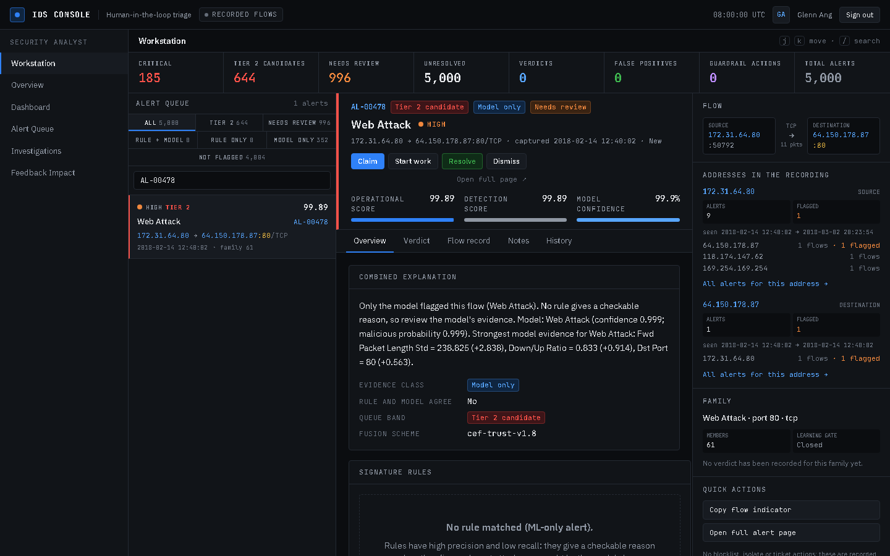
Triage actions: status and ownership
Claim makes you the owner. Start work moves the alert to in progress, Resolve or Dismiss closes it, Release hands it back, and Reopen brings a closed alert back to in progress. Each action is written to the audit trail. These never move a score: status is workflow, not judgement. Only verdicts move scores, and the guardrails bound them.
Tabs
| Tab | What it holds |
|---|---|
| Overview | The combined explanation, the signature rules (or the "no rule matched" state) and the model's TreeSHAP evidence |
| Verdict | The score-adjustment chain and the verdict form, with all five verdicts |
| Flow record | The flow's 5-tuple, sizes and every recorded feature |
| Notes | A notes thread. Notes are permanent: a correction is a new note |
| History | Every verdict on the alert, oldest first, amendments included |
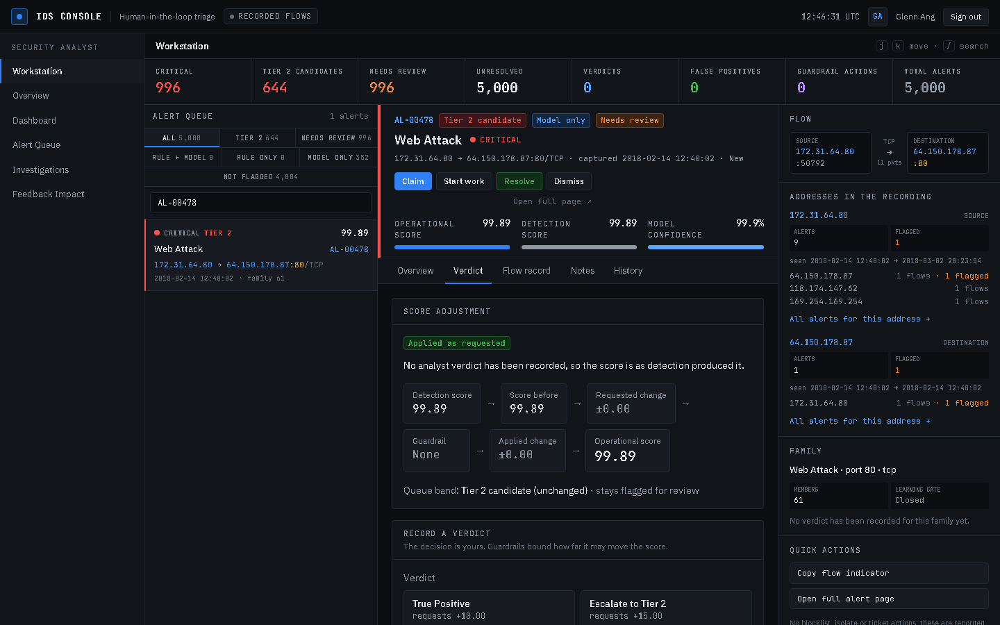
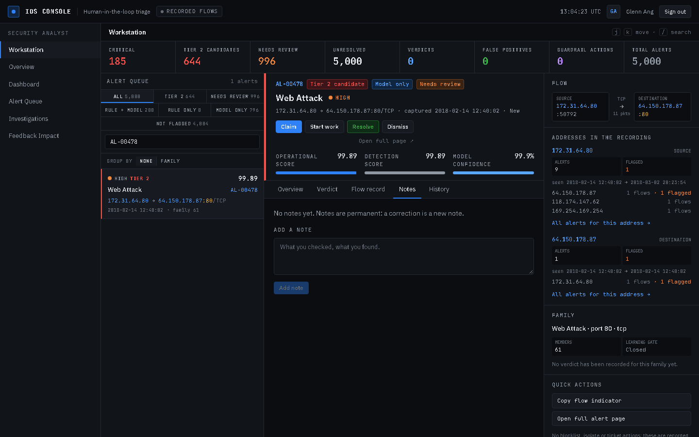
The context rail
Flow draws source → destination:port over the protocol. Addresses in the recording shows, for each address, its alert count, how many were flagged, when it was first and last seen, its top peers, and All alerts for this address, which searches the queue. Click the address itself to open its full page (Act 2). Family shows the family key, members and whether its learning gate is open. Quick actions copy the flow indicator or open the full alert page. There are no blocklist, isolate or ticket buttons, because these are recorded flows, not a live network.
This is where an analyst spends the shift: the queue on the left, the evidence in the middle, the context on the right. Claiming and closing an alert is workflow; only a verdict moves a score, and the guardrails decide how far.
The dashboard, the queue, and the overview
/analyst/dashboard · /analyst/queue · /analyst/overview · /analyst/entities/ip/:ip- Click Dashboard in the left navigation.
- Point out the four counters, queue composition, Needs a human (the highest-ranked alerts awaiting review), and the breakdowns by attack class and severity.
- Click Alert Queue for the full table. Show both score columns, then set Band to Model only.
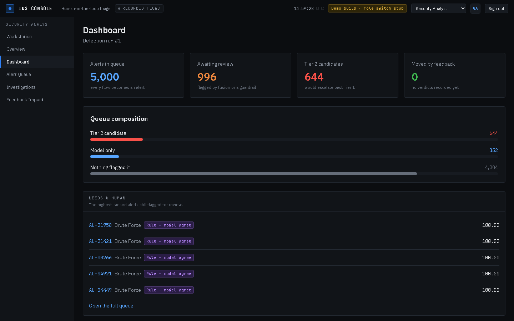
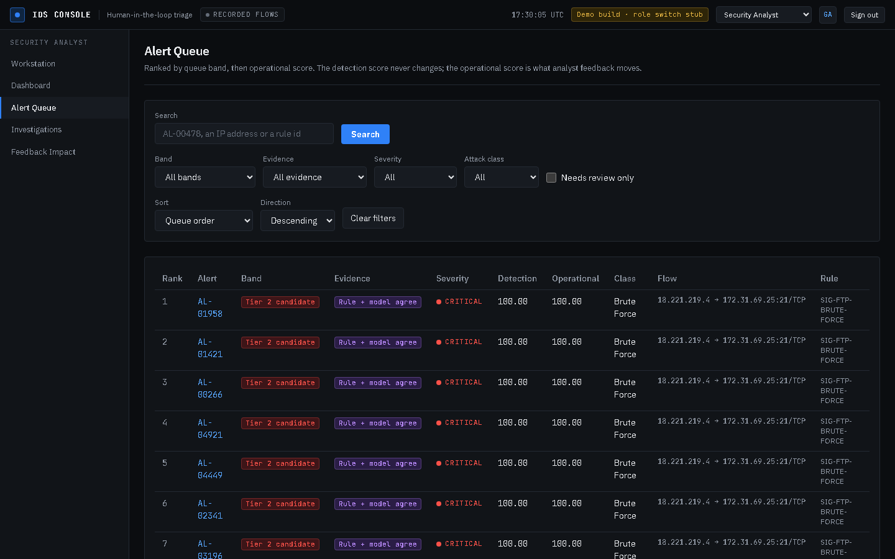
- 1The toolbar. The same controls as the workstation's band tabs, plus search, evidence, severity, attack class, the two score ceilings, sort, direction and judged. Everything in it writes to the address bar, so a filtered view is a link you can paste.
- 2Severity — the ranking's first sort key. Severity runs Critical · High · Medium · Low · Informational, and the operational score orders within each. The band is a label now, not a key: Tier 2 candidate marks an alert the Tier 2 criteria selected for escalation, and it orders the band tabs. It no longer decides position — until v1.31 the whole top 50 was made of Tier 2 candidates at Medium, which is not what a Tier 1 analyst should open first.
- 3Operational score — what analysts move. Beside it sits Detection score, which is what the detectors said and never changes. Two columns, one immutable, one edited by people: that contrast is the design.
- 4The rows. Click a reference to open the alert. Note "1–50 of 5,000": every flow is in this queue, including the 4,004 nobody flagged. The queue is the whole recording, ranked — not just the alerts.
Every flow becomes an alert, including the four thousand nobody flagged. There are two score columns. Detection is what the detectors said, and it never changes. Operational is what analysts move, and it is how you see a human's effect.
Every filter, with the count you will see
| Control | Try | Rows |
|---|---|---|
| Search | A rule ID: SIG-SSH-BRUTE-FORCE, then Enter | 54 |
| Search | An address: 172.31.69.28 | 215 |
| Band | Tier 2 candidate | 644 |
| Band | Model only | 352 |
| Attack class | Web Attack | 61 |
| Attack class | Infiltration | 35 |
| Needs review only | Tick it | 996 |
| Evidence · Severity · Sort · Direction | Narrow or re-order the view; Queue order is the ranking the evaluation measured | — |
| Clear filters · Previous · Next | 50 rows per page | — |
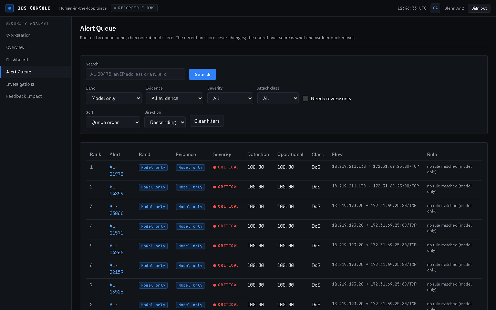
The toolbar: what to click to change what the queue shows
The demo runs on the defaults: Sort = Queue order, Judged = Any, Direction disabled. The rest of the toolbar exists so an analyst can check one specific claim, and so you can answer a challenge from the panel on the spot. Every control writes to the address bar, so a refresh, a Back, or a pasted link restores exactly what was on screen.
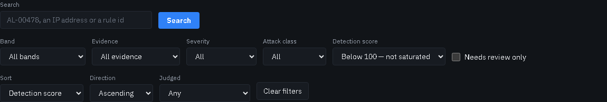
- 1Sort — what the queue is ordered by. Leave it on Queue order for the narrative: that is the contract order — severity worst-first, then the operational score. Six options follow: Operational score, Detection score, Newest, Severity and Evidence. The last one earns its place: choose Evidence, ascending when you suspect the model, and the queue leads with alerts a rule can substantiate. On the weakened-detector stress database that order reaches precision@100 1.000 where the contract order reaches 0.000 — on a detector whose false positives carry an attack's full confidence, the rule layer is the only thing that separates them.
- 2Direction — disabled while Sort is Queue order, deliberately: the contract order has no direction, and its tooltip says so. Choose an inspection sort such as Detection score and it becomes live — ascending reads oldest capture first, descending reads newest first.
- 3Judged — the "verdict done" view. True Positive shows what has been confirmed; False Positive and Benign Positive show what was dismissed; Escalate shows what went to Tier 2; Not yet judged shows what nobody has touched. The demo leaves it on Any.
- 4Detection score — the ceiling. Choose "Below 100 — not saturated" to hide the 975 alerts pinned at exactly 100.0. On its own it leaves 4,025 of the 5,000.
AL-00576 visibly climbs 81.30 → 91.30 — the widest headroom in the set, and a genuine Infiltration, so the confirmation asserts something true.Before you present: the false positives, by reference
The console cannot list its own false positives, and it must not pretend to. Ground truth is joined only by the evaluation harness — packages/evaluation/truth.py refuses to score a flow it cannot check — so on a real network the system would not know which of its alerts were wrong. These references come from the capture's labels. They are for your preparation: search one in the queue, and you have an alert that is genuinely wrong to work a verdict, a guardrail and family learning on.
False positives are one niche case, not the story. The demo's subject is the ranking and the feedback loop. This list exists so the false-positive beat is available on demand rather than something the ranking has to surface for you.
| Reference | Class the system assigned | Detection | Capture says | Use it for |
|---|---|---|---|---|
AL-00478 | Web Attack · High | 99.89 | Benign | Act 3 — dismiss it; the guardrail holds the floor at 70 and the family learns |
AL-02717 | Web Attack · High | 88.48 | Benign | A second dismissal, if you want one. Never confirm it |
AL-03086 | nothing flagged it | 36.94 | Web Attack (attempted) | Act 4 — confirm the attack both detectors missed |
AL-04260 | nothing flagged it | 14.06 | Infiltration | A second missed attack, if you want one |
--database data/stress.db for the weakened detector's 600.Severity: how bad it is, not only how sure the model is
Five labels, and since 16 Sep 2026 all five occur. Severity is the band the operational score falls in — Informational below 1, Low from 1, Medium from 40, High from 70, Critical from 80 — and then capped by what the alert's attack class can reach. That second step matters. Confidence answers "how sure is the model?". It cannot answer "how bad is this?".
The ceiling is not a second opinion. It is the severity chart this project already keeps. config/severity-chart.json (decision Q27) gives every model class a CVSS v3.1 score, and that chart already decides Tier 2 candidacy and scales family movement. The ceilings are read from it: cef.ceilings_from_chart() maps each class's CVSS band onto the severity label. Edit the chart for one purpose and the severity ceiling moves with it. The two cannot disagree, because there is only one of them.
Until the ceiling existed, only two labels ever appeared — and that was a defect, not a property of the data. Severity was a function of the model's confidence alone, and the model is confident about everything it flags: the lowest malicious probability in the demo is 0.813, so every flagged alert cleared the Critical threshold. Measured on the old build, 994 of 996 flagged alerts read Critical, every one of the seven attack classes among them. A reconnaissance sweep and an intrusion were indistinguishable in the severity filter. The rebuild proposal had recorded the symptom — "severity in this data is only Critical or Informational" — without a cause.
| Attack class | Chart | CVSS band | Ceiling | Alerts | Severity now |
|---|---|---|---|---|---|
| Port Scan | 3.0 | Low | Low | 150 | Low |
| Brute Force | 5.0 | Medium | Medium | 200 | Medium |
| DoS | 6.5 | Medium | Medium | 200 | Medium |
| DDoS | 7.5 | High | High | 200 | High |
| Web Attack | 8.0 | High | High | 61 | High |
| Botnet | 9.0 | Critical | Critical | 150 | Critical |
| Infiltration | 9.5 | Critical | Critical | 35 | Critical |
The cap can only lower a label, never raise one — a class that could raise one would let a quiet finding outrank a loud one. That property is tested directly, over every class in the contract and every band edge. A reconnaissance sweep now reaches Low while an intrusion reaches Critical, and the severity filter can separate them at last.
| Severity | Old build | Confidence-only bands | Now, chart-capped |
|---|---|---|---|
| Informational | 4,004 | 3,986 | 3,986 |
| Low | 0 | 17 | 167 |
| Medium | 0 | 351 | 401 |
| High | 0 | 461 | 261 |
| Critical | 996 | 185 | 185 |
| Total | 5,000 | 5,000 | 5,000 |
Overview: who talked, and when
- Click Overview in the left navigation, before any verdict is recorded.
- Point out Flow volume by capture hour: one bar per hour of the recording, the flagged share at its base. The subtitle says it plainly: when the traffic was captured, not a live rate.
- Below it: the top source and destination addresses, the top destination ports, alerts by predicted class, the verdicts in force, triage status and guardrail interventions. Every chart is repeated as a table.
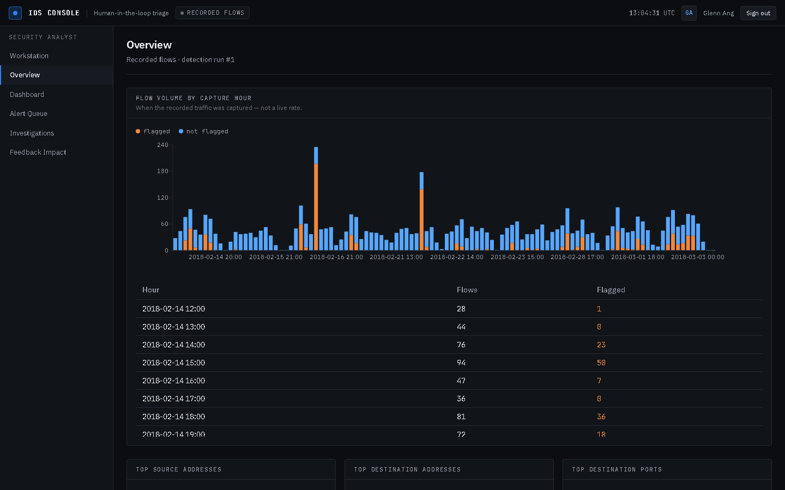
One address, in full
- Click any address in the Overview's tables, or in the workstation's context rail. Open
18.218.115.60, the source of the Web Attacks in Act 3. - Walk the cards: Summary (77 alerts, all as source, 76 flagged, first and last seen), Queue bands, Attack classes, Verdicts in force, Top peers and Destination ports.
- Click the peer
172.31.69.28to follow the traffic to its destination, or All alerts for this address to open the workstation searched for it.
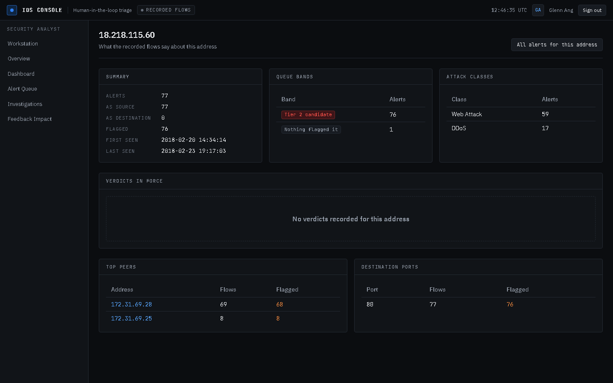
This is the analyst's next question about an address: what else did it do? The page answers only from the recorded flows. There is no geolocation or threat-intelligence panel, because the recording holds none.
AL-00478: a confident model that is wrong
/analyst/alerts/8f22e741-c776-4999-b347-17a0c42aca6a- In the Alert Queue, click Clear filters, search
AL-00478and open it (or use Open full page from the workstation). It is a Tier 2 candidate at 99.89, rank 442 of 5,000. - Walk the four evidence panels: Flow, Signature rules, Model prediction, Combined explanation.
- Show Similar alerts (family): Web Attack · port 80 · tcp, 61 members, learning gate closed.
- In Record a verdict, choose False Positive (requests −30.00), optionally add a note, and click Record verdict.
- Refresh the page. The new score is still there.
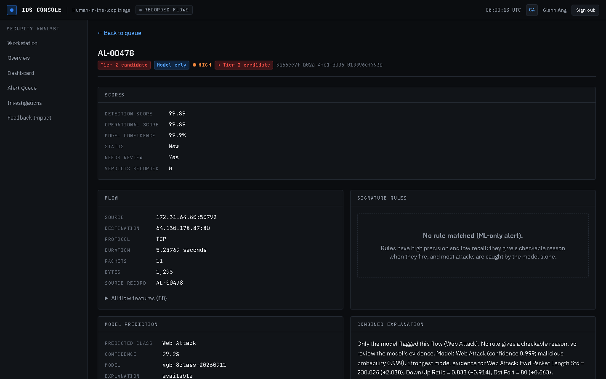
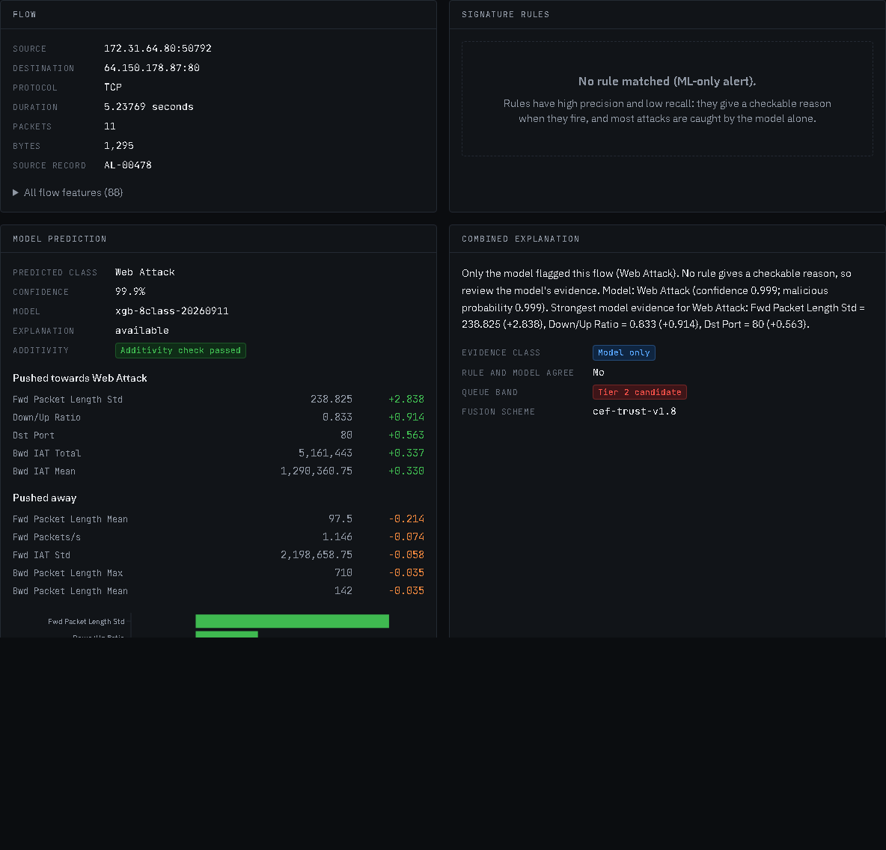
What the model says. Web Attack at 99.9% confidence. The panel lists the features that pushed it towards that call: Fwd Packet Length Std = 238.825 (+2.838), Down/Up Ratio = 0.833 (+0.914), Dst Port = 80 (+0.563). It also lists those that pushed away, led by Fwd Packet Length Mean (−0.214). The explanation passes its additivity check, so it accounts for the prediction exactly.
What ground truth says: benign. The system itself never sees ground truth.
The model is 99.9% sure this is a Web Attack, and no rule agrees. It's benign. The panels inform the decision; the decision is the analyst's.
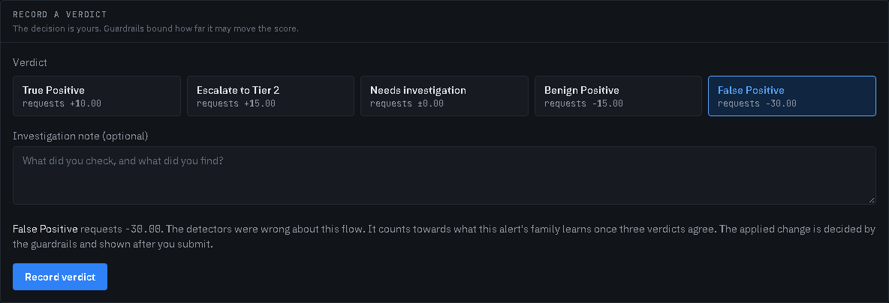
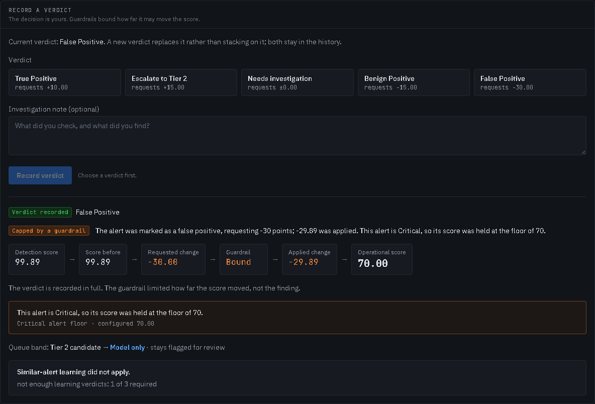
The score-adjustment chain
It is labelled Capped by a guardrail, with the guardrail's own sentence: "This alert is Critical, so its score was held at the floor of 70." The band moves from Tier 2 candidate to Model only, and the alert drops from rank 639 to rank 996.
is_critical means the detection score reached 80, and this alert scored 99.89. The badge is capped by the attack class: since v1.29 a Web Attack cannot display above High however high it scores. Measured on data/demo.db: is_critical = 1 matches combined_score ≥ 80 on all 996 alerts, with zero mismatches either way — so the trigger is exactly right, and it is the sentence that is stale. Do not describe the guardrail as “too wide”: the 996 it protects coincides with the 996 flagged alerts only because every flagged alert scores 80 or more and the highest unflagged one is 42.77.The verdict is recorded in full. The guardrail limited how far one verdict may move a Critical alert; it didn't overrule the analyst's finding. And it gives the number.
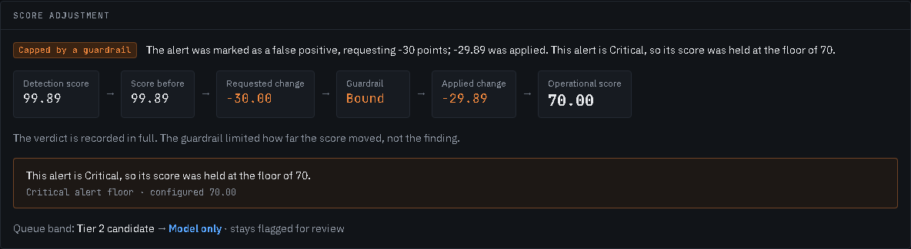
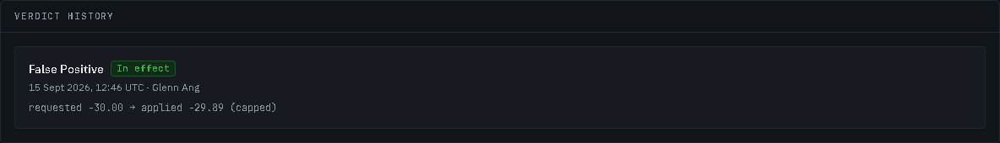
What a "Rule" means — and why the detail panel explains it better than the queue does
A rule is a signature: a small set of conditions on fields of the flow. When every condition holds, the rule matches, and the match is stored with the value the flow actually carried. Nothing about it is statistical — destinationPort = 21 is either true of this flow or it is not, and an analyst can check it by hand.
The queue's Rule column shows only the rule's id. A queue row carries matchedRuleIds and nothing else, so the column reads SIG-FTP-BRUTE-FORCE — or no rule matched (model only). That is a fair criticism: a bare id explains less than the model's predicted class beside it. The full description is one click away, in this panel, which names the rule in words, gives its severity, the class it asserts, and every clause against the observed value.
Read the four labels on the panel's header row: the rule's name is its plain-language title — the direct equivalent of the model's predicted class; the pill is its severity; the id is the stable identifier used in the audit trail and in rules/rule-set-s4b-1.json; and the last word is the attack class the rule asserts, which is what fusion compares against the model's prediction to decide corroboration.
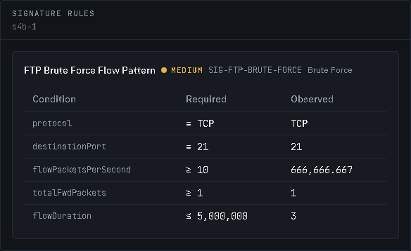
- 1The rule's name — "FTP Brute Force Flow Pattern". This is the rule's own title, the direct equivalent of the model's predicted class. It is what the queue's Rule column would show if the row carried it; today the column shows the id instead.
- 2Its severity, its id, and the class it asserts. Medium is worth 0.60 to fusion.
SIG-FTP-BRUTE-FORCEis the stable id that appears in the audit trail. Brute Force is the class fusion compares with the model's prediction — when the two agree the alert is corroborated, the one evidence class a human can verify end to end. - 3Every clause, against the value this flow carried. The rule requires at least 10 packets per second and this flow ran at 666,666.667; it requires at least 1 forward packet and saw 1; it allows up to 5,000,000 microseconds and the flow lasted 3. Anyone can check those numbers against the flow record — and that checkability is the whole reason the signature layer is in this system. The model's TreeSHAP panel explains the model, not the traffic.
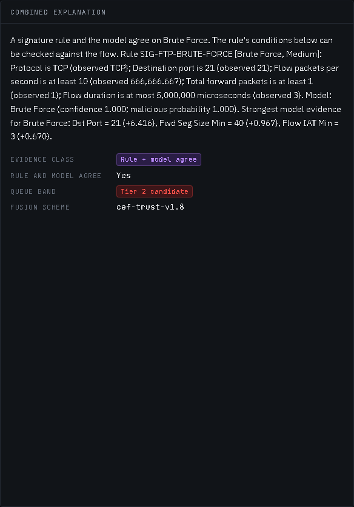
AL-03086: the attack both detectors missed
/analyst/alerts/048f12e7-56db-470b-a69d-714c54fe0bb7- Search
AL-03086and open it: Nothing flagged it, score 36.94. Ground truth says it is an attempted Web Attack. - Choose True Positive (requests +10.00) and click Record verdict.
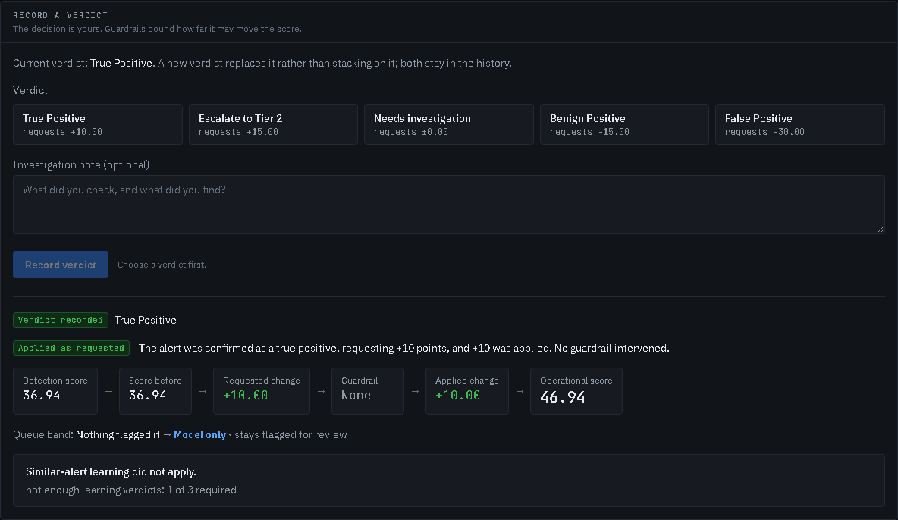
No guardrail needed to act here. Be honest about how far it moved: it leaves the bottom band, but it only climbs from rank 998 to 997, because it already led the unflagged alerts. By design, one confirmation moves one band.
Three agreeing verdicts teach a family
Port Scan · port 445 · tcp — five members- Open
AL-01696and record True Positive. The outcome reads "Similar-alert learning did not apply": 1 of the 3 required learning verdicts. - Do the same for
AL-03873: 2 of 3. - Do the same for
AL-03153. The outcome now reads "Similar-alert learning applied: 2 other alerts in this family moved." - Search
AL-03044, thenAL-04526. Both are now Tier 2 candidate, with no verdict of their own.
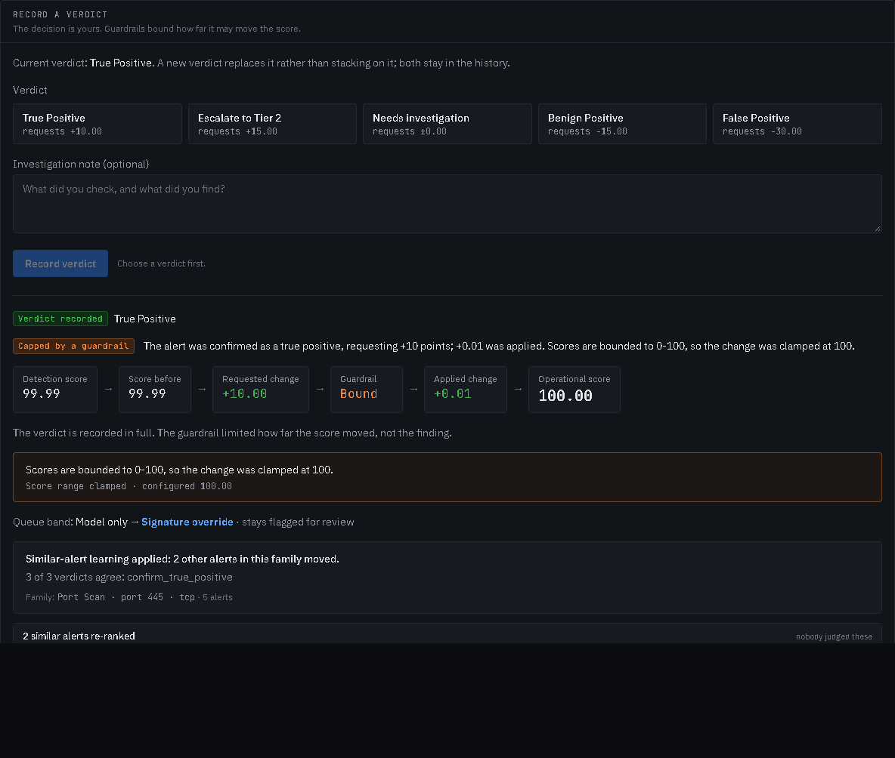
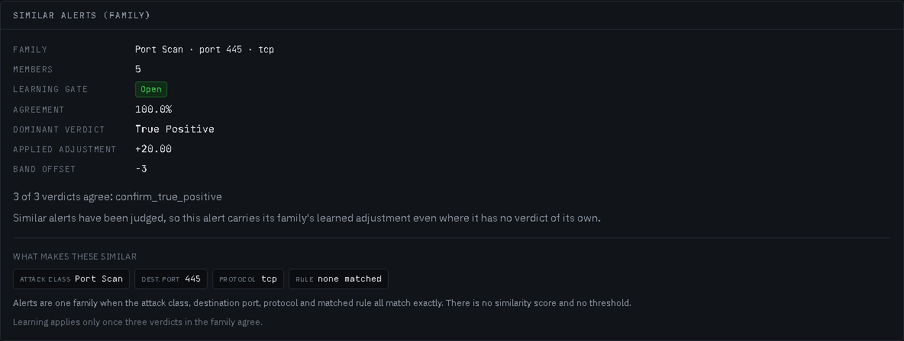
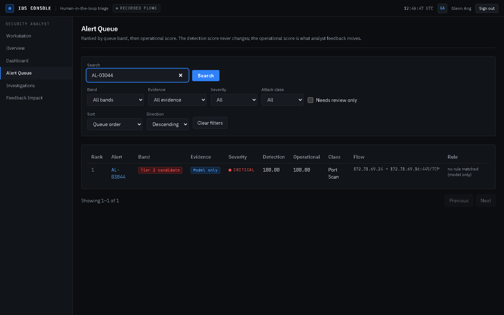
One analyst cannot move a family; three who agree can. Nothing outside the family moved, and all five alerts are real Port Scans. The same mechanism can go wrong, though, and the evaluator view shows where it did.
Do not read the count aloud and move on — the verdict names what it moved
"2 other alerts moved" is an assertion. The table under it is the evidence. Since v1.32 the verdict outcome lists every member the learning re-placed, with the three things that make the movement checkable: score, queue band and queue rank, each before and after. Rank is the one that carries the claim — a score change nobody can locate in the 5,000-row queue demonstrates nothing. It is measured either side of the same transaction, and every alert in the table is one nobody opened, let alone judged.
Each row links to its alert, and a link under the table opens the whole family in the queue. The same list goes into the audit entry, so a score no analyst touched stays traceable — which is the point of having an audit trail at all.
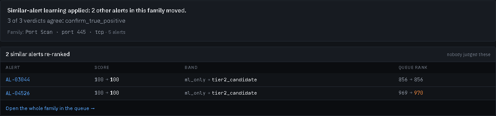
The question that follows immediately: what counts as "similar"?
The panel answers it as fields, not prose. Alerts are one family when the attack class, destination port, protocol and matched rule all match exactly — and, for a flow no detector flagged, the destination address too, so one verdict cannot spread across every benign flow on a port. There is no similarity score and no threshold. The collaborator's weighted matcher (threshold 0.7) was deliberately not ported, because the experiment that chose the ranking formula and the gate grouped by exact family; the screen now says so rather than implying a metric the system does not have.
Before v1.32 this panel printed the key raw — ["Web Attack",80,"tcp","-"] — and the only way to answer the question was to read learning.py.
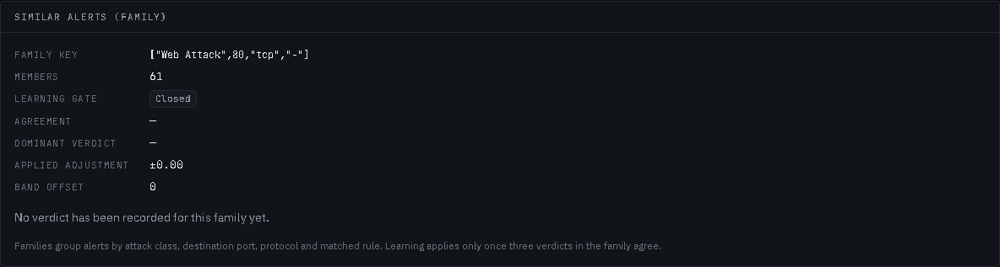
Group by Family: the queue folded into what the learning acts on
Set Group by to Family above the queue. The 5,000 alerts fold into 1,315 families, each row stating its size, how many members a person judged, its gate state, its agreement, and what it applied. A family that has learned reads gate open · 100% agree · 147 unjudged alerts carry this — the sentence this project has been making in prose since the thesis was written. Expand a row to see its members in place.
It is grouping, not a second ranking. Families are ordered by their best-ranked member's position in the contract queue order, and the endpoint does not accept a sort parameter at all. The band tabs and the search narrow the groups exactly as they narrow the rows, because both views share one filter definition.
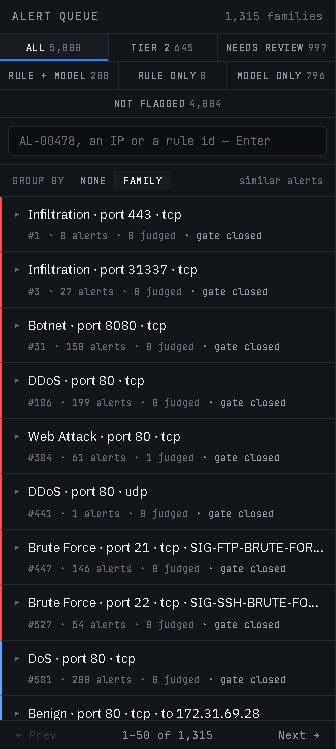
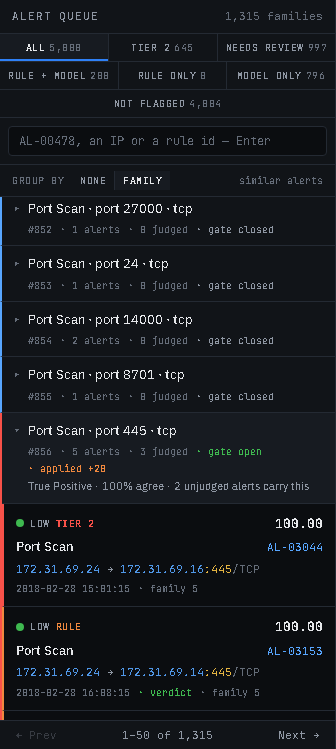
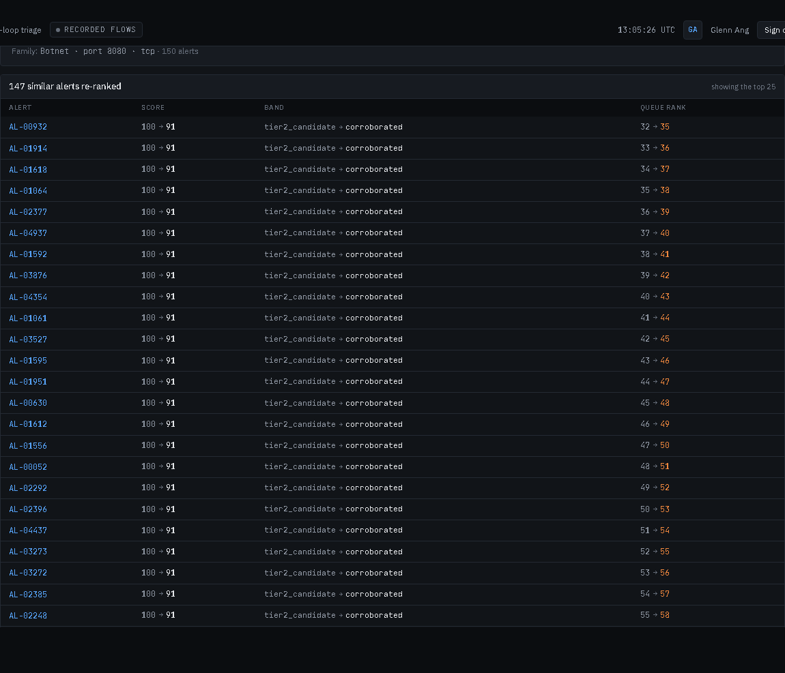
The "verdict done" view: the queue, filtered to what has been judged
A verdict moves the alert, and it moves the queue with it. That is the mechanism working — but it means the alert you just judged is no longer where you left it. Two things keep it findable: every judged row carries a "Verdict recorded" pill, and the new Judged filter turns the same queue into the list of work already done.
Click Judged and choose True Positive once the family act is over. Four confirmations are in force by then — AL-03086, AL-01696, AL-03873 and AL-03153 — and AL-00478's dismissal is correctly absent, because the filter reads the verdict currently in force. Switch it to Not yet judged for the opposite list: everything nobody has touched.
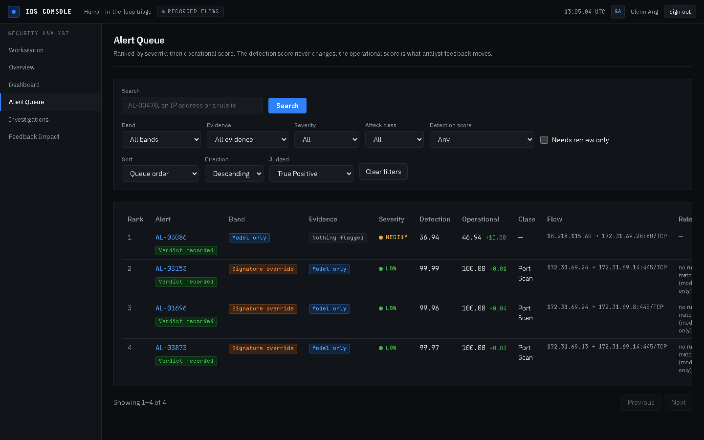
- 1The Judged filter. Set to True Positive here. This is the one control that answers "what have we done?", and it is why a judged alert no longer has to be hunted for.
- 2The "Verdict recorded" pill. Every judged row carries it, in the queue and on the workstation. It reads the same condition the filter does, so a pill and a filter can never disagree.
- 3Band says "Signature override" while Evidence says "Model only". Expect this question. The queue bands reuse the evidence-class names, and family learning has already promoted these three one band; their
evidence_class— the detector's permanent record — is unchanged. It is the nomenclature collision the evaluation report lists as finding 7. - 4Where the movement shows. 100.00 +0.01 is a learned adjustment this alert received from other members' verdicts — it carries no verdict of its own. Compare
AL-03086, judged directly, at 36.94 → 46.94, +10.00. - 5"Showing 1–4 of 4". The queue is now four rows deep. Set Judged back to Any to return to all 5,000 before moving on.
applied_adjustment and applies it inside the guardrails, so an alert that arrives after the verdicts begins where its family has learned it should. Before this, that value sat unread in alert_families and every new alert started at its raw detection score — the learning only ever reached alerts already in the database.The analyst's other two views
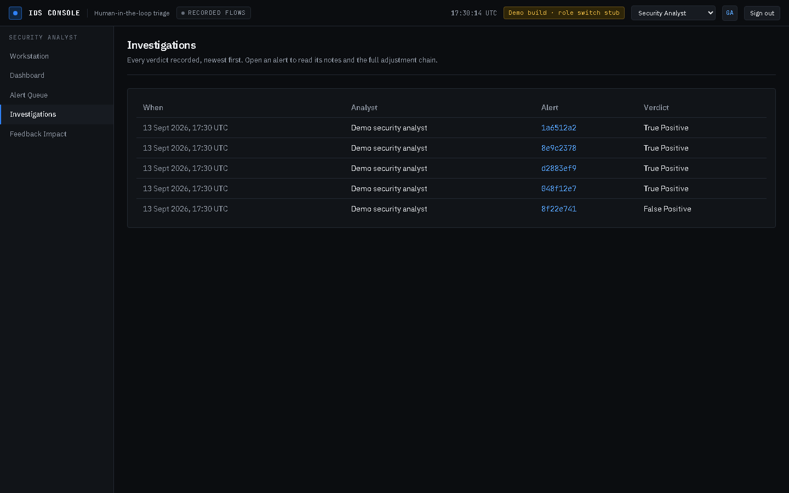
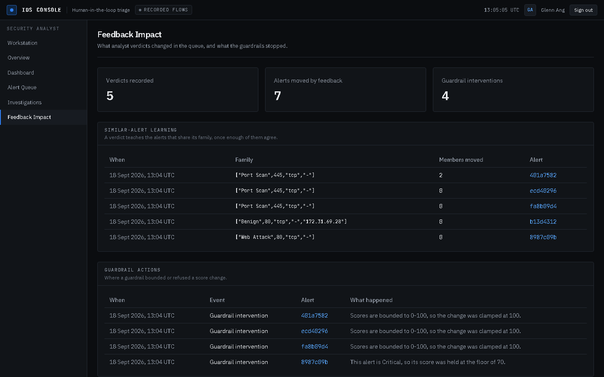
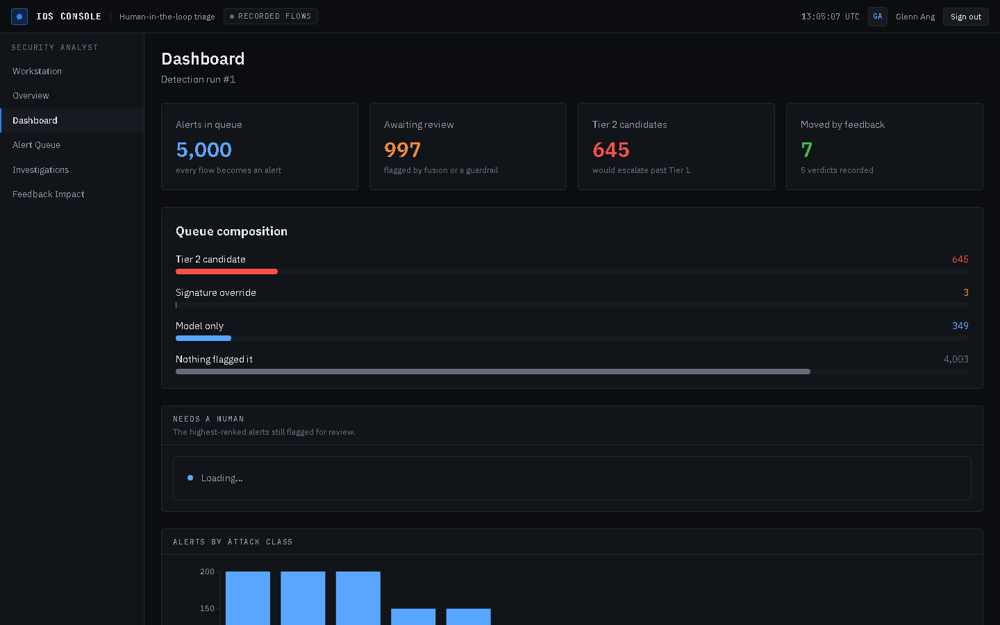
Every other verdict, and every other guardrail
Each row is a different family, so the story above is unaffectedUse these when someone asks "what happens if…". Every result below was recorded against the demo database.
| Open | Verdict | Requests | What happens |
|---|---|---|---|
| AL-01707 | False Positive | −30.00 | Infiltration, score 100. Capped at 75, so only −25 is applied: "Infiltration alerts are held at a floor of 75." |
| AL-01973 | Benign Positive | −15.00 | DoS, score 100. Applied in full, 100 → 85.00; no guardrail binds. |
| AL-03066 | Escalate to Tier 2 | +15.00 | DoS, already at 100. Capped: "Scores are bounded to 0-100, so the change was clamped at 100." The band still moves from Model only to Tier 2 candidate, because escalation is a routing decision. |
| AL-04260 | Needs investigation | ±0.00 | Nothing flagged it, 14.06. Keeps the alert open without moving it, and teaches its family nothing. |
| AL-04260 | Then: False Positive | −30.00 | A new verdict replaces the old one. Verdict history keeps both; the older is marked Superseded. |
The administrator
/admin/status · /admin/guardrails · /admin/audit- Sign out, then sign in as
admin/admin-demo. The navigation changes, and analyst pages are no longer reachable. - System Status: a row of operations figures (total alerts, needs review, Tier 2, verdicts, guardrail actions, unresolved), service health, Detector hits (how many alerts the rule and the model flagged together, and the model alone), and the latest detection run. Check again reports the run; it does not start a new one.
- Guardrails: set Critical alert floor to
85, type a short reason, and click Save changes. The form refuses and says why. - Reload the page and scroll to the Guardrail log. The cap on AL-00478 is there, with the same sentence the analyst saw.
- Audit Trail: every run, verdict, guardrail action, family-learning event and configuration change, plus every claim, status change and assignment made in the workstation. Each event type has its own colour, with its name always written in it. Filter by event type or date, and try Export CSV.
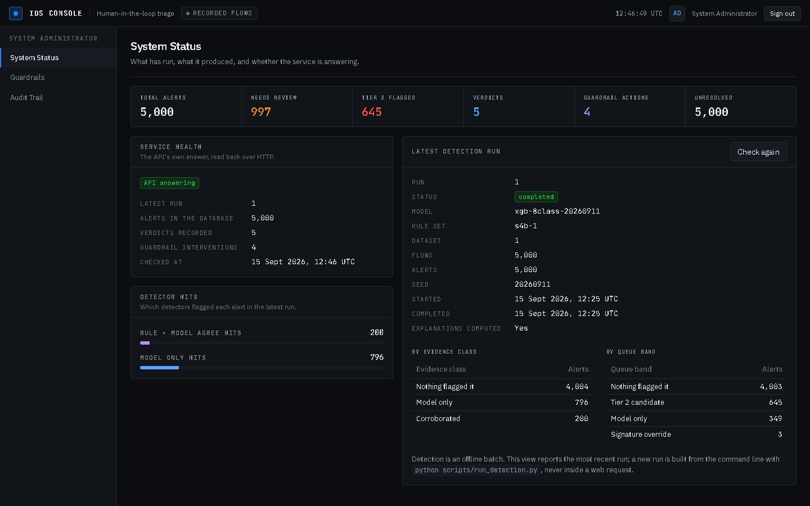
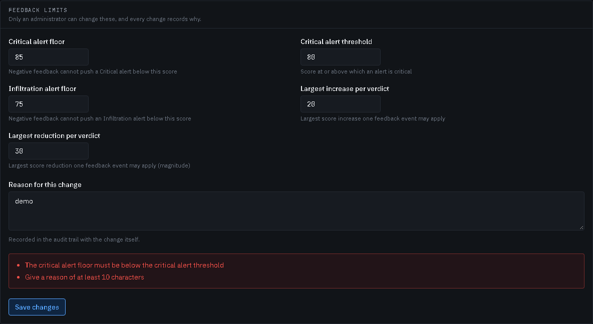
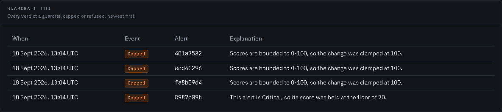
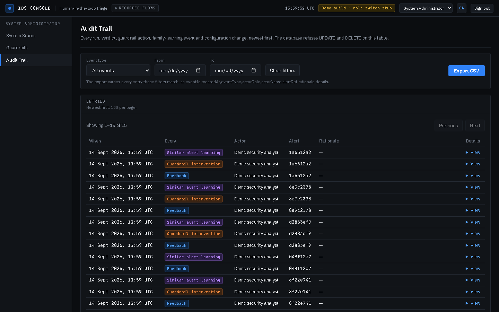
UPDATE and DELETE both raise.403 FORBIDDEN_ROLE.The administrator sees everything the guardrails did, and why. Changing a guardrail needs a reason, and the reason goes into a trail nobody can edit.
The evaluator, including the result that went the wrong way
/evaluator/scenarios · /evaluator/runs/<newest> · /evaluator/metrics- Sign out, then sign in as
evaluator/evaluator-demo. Show the newest run — the list is newest-first, so it is the top row; the id is deliberately not pinned here, because the evaluation re-runs and a hard-coded id goes stale — its pre-registration (rules15-preregistration-1, 40 verdicts fixed before any arm ran), and Newest run at a glance: the three arms side by side, with precision@50 holding at 1.000 in all three — the −0.020 fall belonged to the old band order and no longer happens. - Click Open run →. Read the banner aloud, then the figures row, What was compared beside What the guardrails prevented, and the Arms, Deltas and Who moved tables.
- Click Detection Metrics: the testbed caution, the figures row, the per-class table and a precision / recall / F1 panel for each class, then precision at k and score saturation.
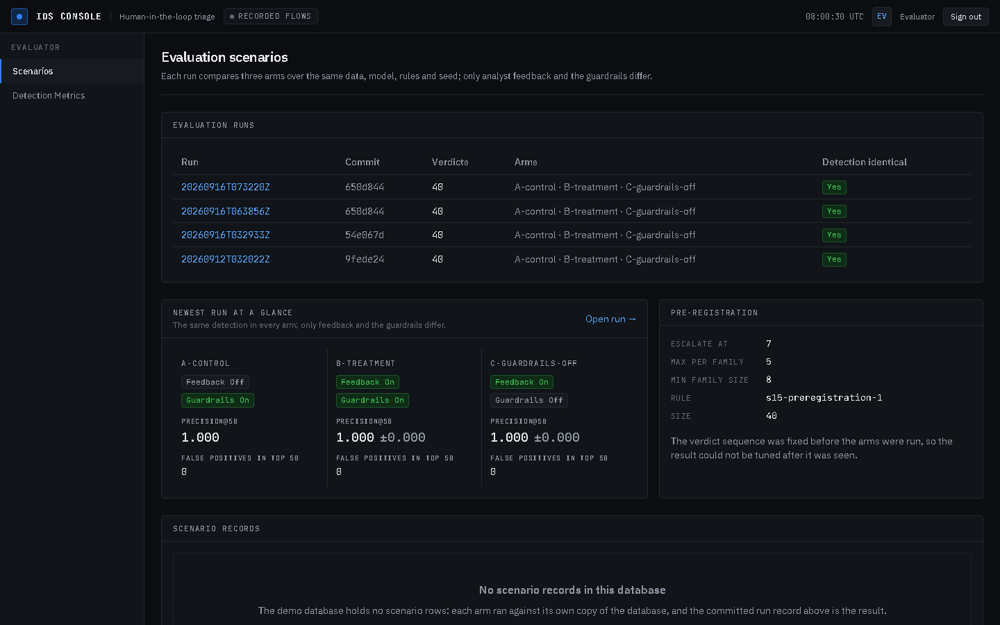
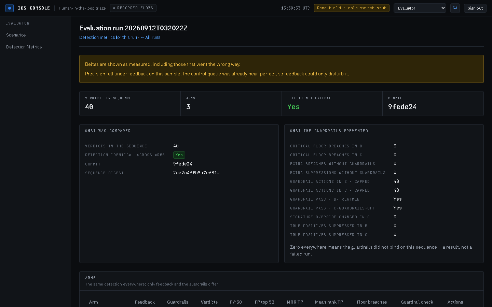
| Arm | Feedback | Guardrails | Precision@50 | FPs in top 50 | Mean rank of attacks | Guardrail actions |
|---|---|---|---|---|---|---|
| A-control | Off | On | 1.000 | 0 | 511.09 | none |
| B-treatment | On | On | 1.000 | 0 | 511.61 | capped 40 |
| C-guardrails-off | On | Off | 1.000 | 0 | 511.61 | capped 40 |
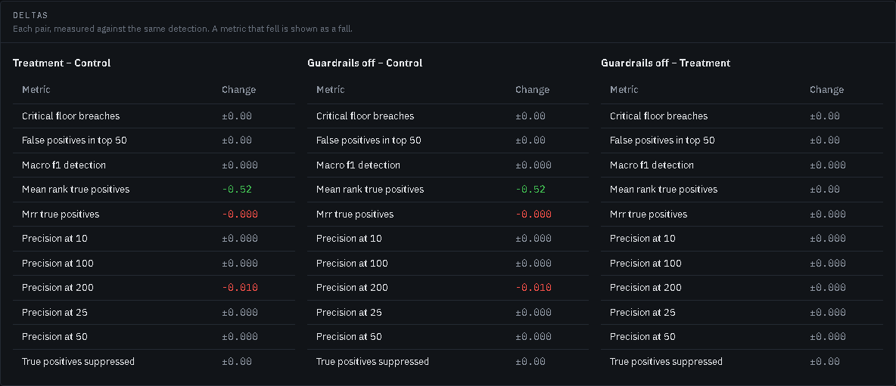
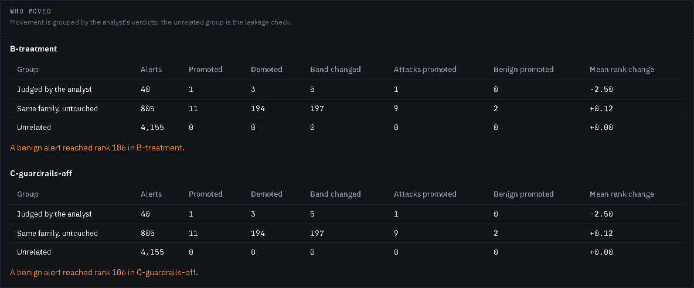
Detection is identical across all three arms: feedback reordered the queue and never touched the detector. Under the severity-first queue, feedback no longer costs a top-50 place — under the old band order it did, and that is the number the previous build shipped. Family learning still promoted two benign alerts, but the best of them only reached rank 186. The remaining deltas are still small and negative, and we report them as measured. No guardrail policy bound on this sequence — but the 100 score ceiling did, on all 40 verdicts, because 975 of 996 flagged alerts already sit at the maximum score and the sequence is entirely positive verdicts. That ceiling applies whether the guardrails are on or off, which is exactly why arm C came out identical to arm B. That is a result too.
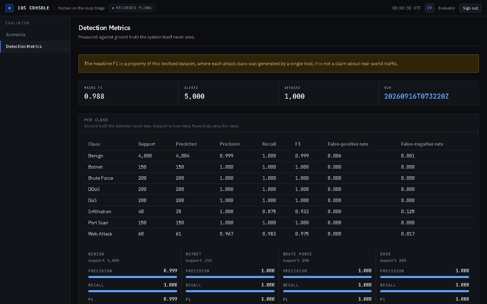
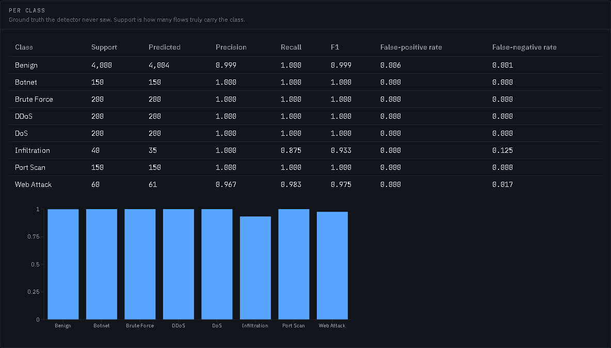
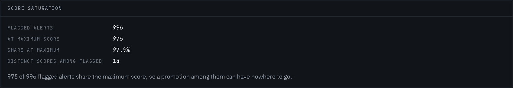
The dataset: which one, why, and what is in it
Which. CSE-CIC-IDS2018 — the improved archive (CSECICIDS2018_improved.zip), a collaboration between the Canadian Institute for Cybersecurity and AWS: realistic benign background traffic against AWS-hosted services, with labelled attacks launched against them.
Why this one. Four reasons, each a finding of ours rather than a convenience: (1) corrected labels — our own pre-analysis found Infiltration records mislabelled in the original labels, and the improved archive carries the corrections; (2) feature provenance — the same team's CICFlowMeter defines the flow features, so the planned exporter (S17) reproduces the training features exactly: no train/serve skew; (3) realistic benign traffic — a live AWS estate under attack, not synthetic flows, which is what makes the false-positive story honest; (4) per-flow features and labels — exactly what ranking, guardrails and evaluation need.
| What the demo sample holds | Value |
|---|---|
| Source rows considered | 63,195,145 |
| Demo sample (disjoint from training, Q20) | 5,000 flows · seed 20260911 |
| Benign | 4,000 |
| Attacks — 7 classes | DoS 200 · DDoS 200 · Brute Force 200 · Botnet 150 · Port Scan 150 · Web Attack 60 · Infiltration 40 |
| Capture window | 14 Feb 2018 (recorded — the console says so) |
| Per flow | CIC feature vector, addresses, ports, protocol, duration, packets, bytes, label, attempted flag |
What kind of IDS produces data like this
Our unit of detection is the network flow with a feature vector — the CICFlowMeter schema (duration, packets, bytes, ports, protocol, plus the derived CIC features). That lineage matters: it is the same family of data produced by flow-based sensors — CICFlowMeter itself, NetFlow/IPFIX collectors, Argus, and the flow records behind commercial NDR/traffic-analytics platforms. It is not the alert stream a signature IDS emits, nor Zeek's scriptable logs — and §13 says exactly how we sit beside those.
Analysis, before and after
Before we built — what the pre-analysis found
Notebooks 01–03, over frozen fixtures: the Infiltration mislabelling (above); the XGBoost retrain to 8 classes with native TreeSHAP explanations; and a held-out re-test of the tuned rules — precision 0.9999, recall 0.1993 over 250,655 unseen rows, 2 false positives in 30,025 hits. High precision and knowingly low recall: rules exist to give a checkable reason, not to catch everything.
The assumption we withdrew. The plan assumed the two detectors were complementary. On corrected data they are not: the signature layer adds no detections, it adds a reason a human can check. Fusion was re-specified around that (evidence classes, CEF v1.8) — the honest redesign, logged as a withdrawn claim.
The gap that made tuning moot. Every flagged flow scores 81.3–100; every unflagged flow 0–42.77; nothing scores in between. Any critical threshold from 42.78 to 81.3 produces the identical queue — recorded as decision Q23, which is why the parameters are configuration, not code.
After we built — what the evaluation measured
S15, the three-arm evaluation (control · family learning · guardrails-off) is the post-analysis, and the evaluator account shows it:
Detection never moved. Per-class metrics are identical across all three arms — feedback reorders the queue and cannot touch the detector. Learning works and does not leak: similar-alert learning moved 681 family members' ranks and no ground truth escaped. And the result that used to go the wrong way is gone. Under the old band order, feedback pushed a benign alert into the top 50 and precision@50 fell 1.000 → 0.980 (Δ −0.020). Under the severity-first order that no longer happens: precision@50 holds at 1.000 and the count of false positives in the top 50 is 0 in every arm. What remains is small and still negative — precision@200 Δ −0.010, mean true-positive rank Δ −0.515 — and we report those as measured rather than dropping them. Macro F1 0.99, stated as a property of the testbed.
And what actually ranks the queue. The 0.99 detector has a third consequence, measured on the demo database rather than assumed: the scores saturate. 975 of the 996 flagged alerts sit at exactly 100.0, and 3,635 of the 4,004 unflagged sit at exactly 0.0 — only 68 distinct scores across 5,000 alerts, so 4,789 of 5,000 (95.8%) share a score with more than a page of other alerts. A tie is the normal case, not the exception, so the tie-break is the visible ranking. It was a hard-coded a.id ASC, which ignored the direction the analyst asked for: sorting the 975 alerts at 100.0 descending and then ascending returned the identical page. It now orders by evidence class, review flag, capture time and id — each following the requested direction — so ascending reads oldest traffic first, the FIFO order for a queue nobody has worked yet. Three regression tests pin it, and two of them fail against the old code.
What we decided, and why
| Decision | What it says | Why |
|---|---|---|
| Corrected dataset | CSE-CIC-IDS2018 improved, not 2017 or the original labels | Our pre-analysis found the Infiltration mislabelling; training on wrong labels teaches wrong lessons |
| Q18 | Attempted attacks are malicious (is_attempted) | A failed attack is still an attack to triage |
| Q19 | Port Scan split from Infiltration as its own class | Different intent, different response |
| Q20 | Training and demo samples are disjoint | The demo must not be a memorisation test |
| Q22 | Evidence priority: corroborated > signature override > model-only | A rule the model disputes outranks a bare model call — it is checkable. (This row used to cite invariant I5, that no override ranks below a model-only alert. I5 was retired in v1.31, when the band stopped ordering the queue; I2 still forces every override to review.) |
| Q23 | Accept the fusion defaults | The 42.77–81.3 score gap: any threshold in it gives the identical queue |
| Q24/Q25 | Five queue bands; Tier 2 candidacy is a label | Escalation must be visible. Since v1.31 the band labels an alert and orders the band tabs but no longer sets queue position — severity leads, so a Tier 2 candidate that is not severe cannot sit at the top |
| Q29 | Formula C1 (severity-weighted) for family learning, with movement M1 | Chosen by experiment over the fixed-step, Elo-style and Elo+uncertainty candidates. C1 is the one that scales movement by attack-type severity, and it leads on mean attack position — 0.0828 against 0.0829 for the Elo forms |
| Q30 | Agreement gate: ≥ 3 verdicts, dominant ≥ 0.67, no tie | Run 2 showed a single verdict moving a whole family — that is one analyst's opinion re-ranking the queue |
| E2 | An explicit Escalate to Tier 2 verdict | Tier 1's escalation must be a recorded decision, not a side effect |
| S18a | Three real accounts replace the role-switch stub | A view is a person: identity comes from the account, enforcement from the server |
Deep dive: what the notebooks actually tested
The notebooks in hitl-ids/notebooks/ are decision records, not results pages — every number is recomputed from artifact files, and superseded conclusions are shown rather than deleted. Three things they established:
How the data was split — and why the first split was wrong
The original split was a single 1,000-row sample, 50/50 benign/attack — 15× more attack-dense than reality, so any verdict-reordering experiment on it would be measuring a queue that never exists. Decision Q20 replaced it: a disjoint training sample of 250,655 rows and a 5,000-row demo sample (seed 20260911, stratified: 4,000 Benign + 7 attack classes) — disjoint, so the demo can never be a memorisation test. The tuned rules were then held-out re-tested over the 250,655 unseen rows: precision 0.9999, recall 0.1993, two false positives in 30,025 hits — the re-test that established the rules were not overfit to their tuning set.
Two splits, not one. The Q20 split is between the two samples. The model was then trained and tested on a second, internal split of the training sample: of its 250,655 rows, the model fitted on 200,524 and was tested on 50,131 it had never seen — an 80/20 stratified hold-out, seed 20260911, over 82 features. That held-out half is where every per-class figure comes from, and it is why they can be quoted at all: the demo sample played no part in training, and the held-out rows played no part in fitting. Eleven fields are refused to the model outright — Label, attack_class, is_attempted, Attempted Category, the source and destination addresses and ports, Flow ID and Timestamp — so the answer key cannot reach a detector even by accident. Precision 1.000 and recall 1.000 on six of the eight classes is therefore a genuine held-out result, not a memorised one; the two classes that are not perfect are the two the testbed barely contains — Infiltration (F1 0.913 on 55 held-out rows) and Web Attack (F1 0.993 on 76).
Why this model — what the tests said
The retrain was forced by the labels, not chosen for taste. The old 6-class model was trained on mislabelled data — it called SSH brute force “Benign” at 0.78 confidence, and it could not emit Infiltration at all, which is 8.3% of the demo data. The corrected labels plus Q19 (Port Scan split out: 99.6% of “Infiltration” was NMAP Portscan) forced the 8-class retrain; on corrected data the new model “catches those flows easily — a strong classifier subsumes weak rules”.
Near-perfect scores were treated as an accusation. In this testbed each attack class targets a fixed port (Botnet 100% on 8080, DoS/DDoS/Web Attack 100% on port 80), so a majority-class-per-port lookup alone scores ~83% accuracy — the model could just be reading the port. The port-shortcut hypothesis was tested by ablation and rejected: removing the port signal cost only −0.0011 macro F1. The model reads behaviour, not the port.
And the model family earns its place two ways: XGBoost on tabular flow features, and — decisively for a human-in-the-loop console — native TreeSHAP, which is what makes the toward-and-away evidence panels possible. The family was later confirmed by a recorded bake-off (notebook 07, identical features, folds and protocol: Logistic Regression collapses to 0.51 macro F1 at 78.7% accuracy — accuracy hides the rare classes; Random Forest 0.962; XGBoost 0.966 ± 0.015 and HistGradientBoosting 0.969 ± 0.011, a statistical tie) — the incumbent retained on the tiebreak that matters: explainability native to the family.
A second, weaker model — so the false positives are real
Why we built one. The strong model is the problem as much as the achievement. On this testbed it is so accurate that the demo queue holds 2 false positives in 996 flagged alerts, and precision is 1.000 at every cut-off to k = 200. Analyst feedback therefore has nothing to correct and can only disturb a perfect ordering — which is exactly what S15 measured under the old band-first order, when precision@50 fell 1.000 → 0.980. The v1.31 severity-first order removed that specific harm — precision@50 now holds at 1.000 in every arm — but the underlying problem stands: what feedback costs on this sample is a small shift in mean rank, not a gain in precision. The efficiency claim our thesis rests on cannot be tested against a queue that is already perfect, and ranking-and-escalation-design.md §8 has said so since v1.13.
What we did. We built a deliberately weaker detector and ran the real pipeline over it, into a separate database (data/stress.db) so the pristine demo is untouched. Nothing about it is invented. For every flow it degrades, the builder copies the complete prediction record of a real attack flow from the committed inference output. Every class, probability, confidence, margin and TreeSHAP attribution in it is an unfabricated output of the same committed model — only the association between a flow and a prediction is synthetic, which is precisely what "a detector that is struggling" means: the detector reports on this flow what it really said about a different one.
The degradation is seeded and reproducible (scripts/build_stress_detection.py, seed 20260916): 600 false positives, 15% of the 4,000 benign flows, each given a real attack's record and spread evenly across the seven classes; and 300 false negatives, 30% of the real attacks, each given a real benign flow's record, so the detector also misses what it used to catch. The builder prints its own manifest, and the file it writes carries a notice that it must never be presented as a measurement of the model.
The strong model — data/demo.db | The weakened detector — data/stress.db | |
|---|---|---|
| Flagged alerts | 996 | 1,346 |
| True positives | 994 | 746 |
| False positives | 2 | 600 |
| Precision among flagged | 0.998 | 0.554 |
| Precision @ 10 | 1.000 — nothing to correct | 0.400 — 6 of the top 10 are wrong |
| Precision @ 50 / @ 200 | 1.000 / 1.000 | 0.780 / 0.730 |
| Score saturated at exactly 100.0 | 975 of 996 (97.9%) | 1,255 of 1,346 (93.2%) |
| Evidence classes present | corroborated 200 · model-only 796 | corroborated 148 · model-only 1,146 · signature override 52 |
The ranking experiment: three runs, pre-registered
Notebooks 05–06 chose the feedback formula the queue runs on. Four candidates (C0 fixed-step, C1 severity-weighted, C2 Elo-style, C3 Elo + uncertainty) × two movement rules (M1 one class at a time, M2 straight to top). Run 2 failed instructively: single verdicts were moving whole families — one correct dismissal of a benign flow the model scored 99.89 collided with real attacks. That failure produced decision Q30 (the agreement gate: ≥ 3 verdicts, dominant ≥ 0.67, no tie). Run 3 was pre-registered — selection rule sel-3 was committed to git before any run-3 number existed (the notebook dates the commit against the run's start), and it named C1 + M2. The project lead adopted C1 + M1 instead, because sel-3's movement pick rested on a metric the analyst never sees — each family's internal class state, including changes the gate withholds from the queue. Every metric the analyst does see is identical for M1 and M2 under the gate. C1 won on three counts: it is the candidate that satisfies the severity requirement, it leads the field on mean attack position (0.0828 against 0.0829 for the Elo forms, about a quarter of one queue position), and it is the simplest of the severity-scaled options. Say the honest version too: its edge rests as much on the requirement and on simplicity as on measured performance, because on this testbed the detector is too good for the formulas to separate.
What makes this different from a commercial IDS
A conventional IDS — however good its detectors — treats the analyst as a consumer: alerts arrive with a score, the analyst closes or escalates them, and everything they learned ends in a ticket the engine never reads. This system closes that loop, and bounds it:
| This console | A typical commercial IDS | |
|---|---|---|
| The analyst teaches the engine | A verdict re-ranks future similar alerts behind an agreement gate — three analysts must agree | Verdicts end in a ticket; the ranking never learns from them |
| Guardrails with sentences | Every bound on analyst influence (+20 / −30, floors, immune bands) is explained on screen, in prose | Scores move silently, or analyst overrides are unlimited |
| Two scores, one frozen | Detection never moves; Operational is what humans moved — the effect is visible and auditable | One opaque score that mixes detector and human edits |
| Evidence you can check | Rule clauses beside the values this flow actually had; SHAP towards and away | "Model says malicious, confidence 99%" |
| No lone analyst moves a family | Agreement gate + demotion shield: noisy verdicts cannot thrash the queue | Not applicable — there is no family learning to abuse |
| Append-only by construction | Verdicts, notes and audit refuse UPDATE and DELETE at the database | Case notes are editable records |
| The product measures itself | A built-in evaluator: three arms, pre-registration, wrong-way deltas displayed | Accuracy claims with no harness you can run |
Shipping it to a customer
What ships today is a lab appliance: an offline batch pipeline, a SQLite database, the API and the built console, three seeded accounts. It replays recorded traffic — by design, for evaluation.
The production path is planned, not improvised:
- Flow ingestion (S17). A CICFlowMeter-fork exporter turns the customer's SPAN/TAP/PCAP into the same feature schema the model trained on — the dataset's provenance is what guarantees no train/serve skew.
- Backend hardening (S18). PostgreSQL (the schema was written for it in S2), real user management and provisioning instead of seeded accounts, the remaining endpoint surface, append-only guarantees re-proven on Postgres.
- Deployment shape. On-prem, as a container/VM beside the customer's existing SIEM — the pipeline and its database stay on the customer's site. A SOC does not ship its flows to a vendor, and we do not ask it to.
- Per-customer configuration. Guardrail settings and the severity chart are admin-configurable at runtime and snapshotted per run; model and rule versions are recorded on every run, so any past decision is replayable.
- Rollout pattern. Replay the customer's historical flows first (shadow mode), tune the guardrails on their traffic, then put Tier 1 on the console beside the incumbent IDS — the ranked queue and the two score columns make the cutover observable, not a leap of faith.
Replacing the layer — or sitting beside whatever they already run
The layer we replace is not the sensor; it is the detection-and-triage layer — the ranked queue the analyst actually works. And the integration decision that matters most was made by refusing to write a parser per vendor: we read the wire, not the other IDS's output. Every IDS has a different output format, but they all watch the same packets; our exporter (S17, a CICFlowMeter fork) taps the same SPAN/TAP mirror and emits exactly the feature schema the model was trained on. The integration surface is the mirror port, not a vendor SDK.
Where an incumbent tool's output does add value, it enters through the channel the fusion layer already understands:
| Incumbent IDS | What it outputs | How it coexists |
|---|---|---|
| Flow-based — NetFlow/IPFIX collectors, Argus, CICFlowMeter, NDR platforms | Flow records with feature fields — our closest cousins | Direct. Map their records to the CIC schema (a field-mapping adapter); or bypass them and read the wire with our own exporter |
| Signature IDS — Snort, Suricata | Alerts / EVE JSON — a totally different data type from flows | Their alerts are evidence, not input. A rule hit maps onto our signature-evidence channel (a checkable claim with clauses), and their alerts appear as triage context. They do not feed the model — plan deviation D-1 records that Suricata as a model stream was rejected: it cannot emit CIC flow features, so it cannot feed the classifier |
| Metadata IDS — Zeek | conn.log and scriptable logs — close kin to a flow record | Adapter. Zeek's connection records convert to the flow schema the same way NetFlow does |
| SIEM / aggregator — Splunk, QRadar | They consume everything, produce dashboards | We feed them. Our API, audit trail and CSV export are their inputs, not the other way round |
Reset and troubleshooting
# in the API terminal: stop it (Ctrl+C), rebuild the database, start it again > cd "C:\Users\Glenn Ang\Desktop\SIM Assignments\FYP\CSIT321-Human-in-the-loop_IDS\hitl-ids" > .venv\Scripts\activate > del data\demo.db # required: the script appends to an existing file > python scripts/run_detection.py > python -m uvicorn apps.api.main:app
run_detection.py adds a run to whatever database it finds: running it over a used one leaves 10,000 alerts across two runs, with every verdict from the last demo still in place. Deleting first is what makes it a reset. The file is gitignored and takes about 21 seconds to rebuild, and the three sign-in accounts re-seed themselves the first time someone signs in. Verify with the KPI strip: 5,000 total alerts, 644 Tier 2 candidates, 0 verdicts.| You see | Cause | Fix |
|---|---|---|
Starting the API ends in TypeError: Router.__init__() got an unexpected keyword argument 'on_startup', and the paths mention Python312 | The project environment isn't active, so the computer's own Python 3.12 ran it (its FastAPI 0.115 doesn't work with its Starlette 1.6) | From hitl-ids: .venv\Scripts\activate, then run the command again |
python --version prints 3.12 (or anything but 3.11) | The environment isn't active in this terminal | Activate it; the prompt should start with (.venv) |
The prompt shows (.venv) but python --version still prints 3.12, and imports fail with Error importing numpy | The environment was created with py -m venv or plain python -m venv, which use Python 3.12. The py launcher does not know about the miniconda Python 3.11 | deactivate, delete the .venv folder, then recreate it with the full path: C:\ProgramData\miniconda3\python.exe -m venv .venv, activate, and python -m pip install -r requirements.txt |
PowerShell says Activate.ps1 cannot be loaded because running scripts is disabled | PowerShell's script policy | Use Command Prompt and .venv\Scripts\activate, or skip activation and call .venv\Scripts\python.exe directly |
No module named 'apps' when starting the API | You ran uvicorn from the wrong folder | cd into hitl-ids (the folder with apps/ and packages/) and run it again |
No module named 'fastapi', 'uvicorn' or 'xgboost' | The environment isn't active, or was never installed | Activate .venv; if it still fails, python -m pip install -r requirements.txt |
Every panel says "Cannot reach the API" · NETWORK_UNREACHABLE; buttons do nothing | The API isn't running on :8000 (the console on :5173 still loads) | Start python -m uvicorn apps.api.main:app from hitl-ids/, then reload |
The workstation loads, but the KPI strip shows dashes, or Claim, notes or the address panel fail with NOT_FOUND | The API was started before the latest code | Stop the API and start it again |
"Something went wrong" · DATABASE_MISSING · HTTP 503 | There is no data/demo.db | Run python scripts/run_detection.py |
| The KPI strip reads 10,000 total alerts, and System Status lists two detection runs | run_detection.py was run over an existing database — it appends a run rather than replacing the file | Stop the API, del data\demo.db, run it again, restart the API. Expect 5,000 alerts and one run |
| The KPI strip shows verdicts, false positives or guardrail actions before anyone has judged anything | The database still carries a previous session’s verdicts | The same reset. A clean database reads 0 verdicts |
| Alerts already say "Verdict recorded" | This database was demonstrated on | Rebuild it, as above |
AL-00478 isn't in the Tier 2 band | An earlier run dismissed it | Rebuild it |
| Port 8000 or 5173 already in use | A previous server is still running; two copies of npm run dev is a common one | Stop it, or close its terminal |
| Tests are skipped | A test needs a file that isn't there, such as the demo sample or the trained model | Run pytest with -ra to see each skip's reason |
Known limitations
| Limitation | Why |
|---|---|
| Accounts are seeded and their passwords are committed | It is an offline demo; real user management and provisioning are S18 |
| Detection is an offline batch; "Check again" only reports the latest run | A 21-second job doesn't belong inside a web request |
| The workstation shows recorded flows only: no live feed, geolocation, threat intelligence or response actions | The recording holds none of that data, so the console does not invent it |
| Families are a coarse key (class, port, protocol, rule) | That coarseness promoted a benign alert in the evaluation. Under the band order it reached rank 1; under the v1.31 severity order it reaches rank 186 |
| The 0.99 macro F1 is a property of the testbed | A single tool generated each attack class |
| Feedback could not raise precision on this sample | The control queue already had precision 1.000 up to k = 200 |
AL-03086 climbs only one rank | One confirmation moves one band, and it already led its band |
| The refusal guardrail can't be shown | The dataset contains no rule-only alerts |
| The stress database is a simulation, and it says so | data/stress.db re-attributes real attack predictions to benign flows, so an injected alert's TreeSHAP panel describes its donor flow. Every number in it is a real model output, but it is not a measurement of the model — data/demo.db is. The builder writes that notice into the file |
| The contract queue order was changed in v1.31 | db.QUEUE_ORDER_BY used to order by band, then score, then id. v1.28 held that change back because it re-baselines the recorded three-arm evaluation and moves the demo's printed ranks. v1.31 made it: the band put Tier 2 candidates that are not severe at the top, so the queue now orders by severity, then score. The evaluation was re-run (20260916T063856Z) and the ranks in this guide are the new ones |
| The score still saturates at 100.0 | A real attack record carries about 1.0 confidence, so 93.2% of the weakened detector's flagged alerts still sit at exactly 100.0. What ranks the queue is the tie-break; de-saturating the score would change the fusion contract |
Feature coverage
| Feature | Where | Act |
|---|---|---|
| Account sign-in (bcrypt + JWT), wrong password refused, sign out | /login · top bar | 1, 7 |
| Workstation: KPI strip, band tabs with counts, search, j/k keyboard triage | /analyst/workstation | 1b |
| Claim, start work, resolve, dismiss, release, reopen (audited, never moves a score) | Workstation header | 1b |
| Alert notes thread (append-only) | Workstation · Notes | 1b |
| Flow diagram, address context and pivot, family summary, quick actions | Workstation · context rail | 1b |
| Dashboard counters, queue composition, Needs a human, charts | /analyst/dashboard | 2, 5 |
| Ranked queue: search, band / evidence / severity / attack-class filters, needs review, sort, paging | /analyst/queue | 2 |
| Overview: capture-hour histogram, top addresses and ports, predicted classes, verdict and status mix, guardrail interventions | /analyst/overview | 2 |
| IP address page: summary, bands, classes, verdicts, peers (each a link), ports, workstation pivot | /analyst/entities/ip/:ip | 2 |
| Four evidence panels, including every flow feature | /analyst/alerts/:ref | 3 |
| Rule clauses against observed values | AL-01958 | 3 |
| TreeSHAP towards and away, additivity check | AL-00478 | 3 |
| Verdict form: True Positive, Escalate to Tier 2, Needs investigation, Benign Positive, False Positive; investigation note | Record a verdict | 3, 4, 6 |
| Score-adjustment chain with the guardrail's sentence | Score adjustment | 3 |
| Critical floor · Infiltration floor · score clamp | AL-00478 · AL-01707 · AL-03066 | 3, 6 |
| Persistence across refresh; verdict history and amendment | Verdict history | 3, 6 |
| Similar-alert learning, agreement gate, untouched members moved | Port Scan / 445 | 5 |
| The moved members named: score, band and queue rank before and after | Verdict outcome | 5 |
| What "similar" means: the four exact-match fields, no score, no threshold | Similar alerts (family) | 5 |
| Group by Family: 1,315 groups, each with its gate, agreement and applied adjustment | Workstation · Group by | 5 |
| Investigations · Feedback Impact | /analyst/investigations · /analyst/feedback-impact | 5 |
| Operations figures, service health, detector hits and run provenance | /admin/status | 7 |
| Guardrail settings with validation and a required reason; guardrail log | /admin/guardrails | 7 |
| Append-only audit trail, filters, CSV export | /admin/audit | 7 |
| Newest run at a glance: the three arms side by side with the change against control | /evaluator/scenarios | 8 |
| Pre-registration, three-arm comparison, deltas as measured, who moved | /evaluator/runs/:id | 8 |
| Per-class table and precision / recall / F1 panels, precision at k, saturation, testbed caution | /evaluator/metrics | 8 |